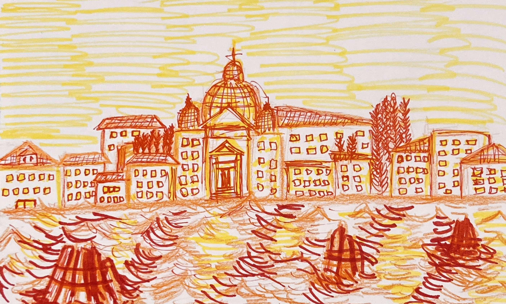
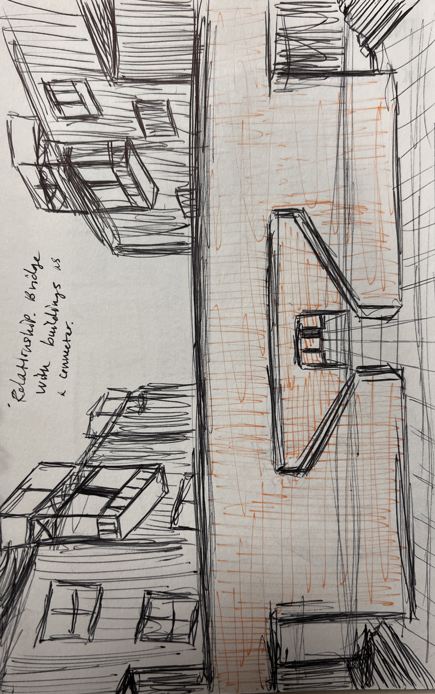
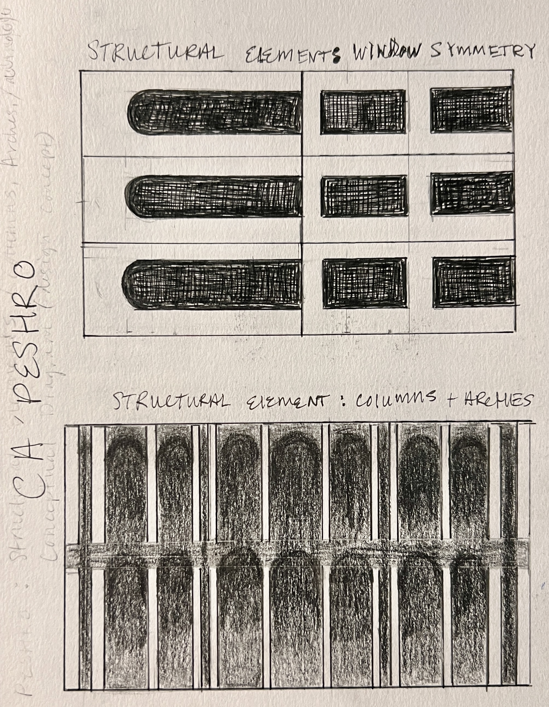

Architecture · Drawings
Observational Drawings
Barcelona & Oslo
Drawing Across Europe
Observational drawings made while traveling, carried alongside the Venice studio work. Each drawing is an act of close looking: a method of understanding how buildings are made, how they hold light, and how they belong to their context. Barcelona Cathedral and an Oslo residence were studied for their material character, proportion, and construction logic.






Selected Drawings
Works on Paper
Barcelona, Spain
Barcelona Cathedral
Hand drawing of Barcelona Cathedral. Study of Gothic Revival ornament, stone tracery, and vertical proportion through direct observation.
Oslo, Norway
Oslo House
Architectural drawing of a residential building in Oslo. Study of Scandinavian material culture, fenestration rhythm, and domestic typology.